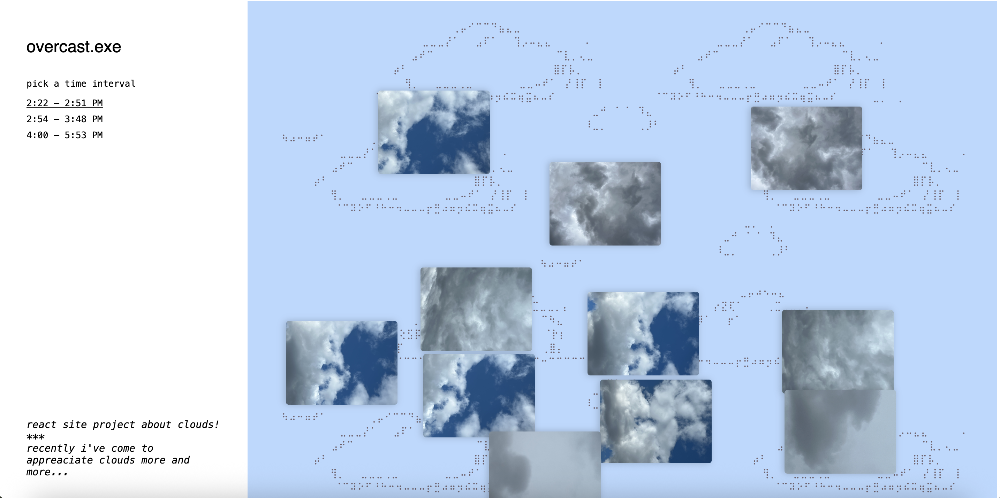
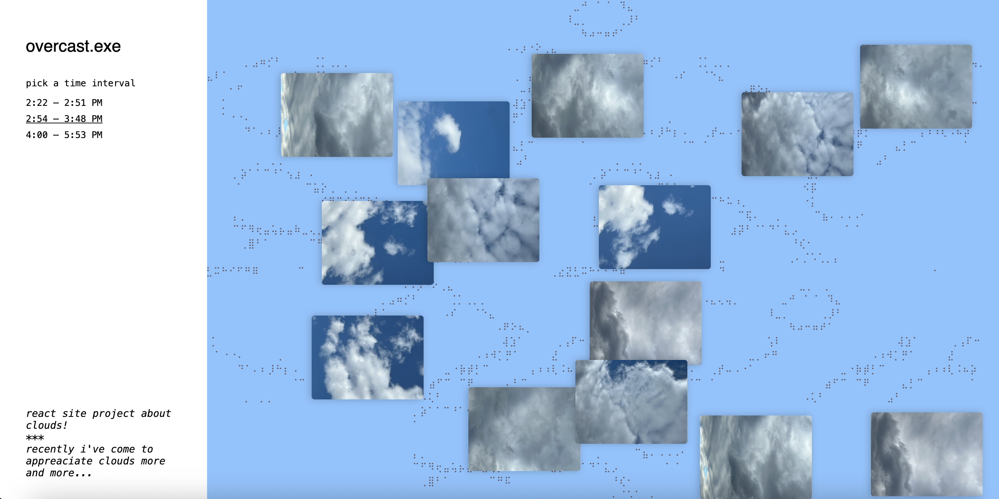
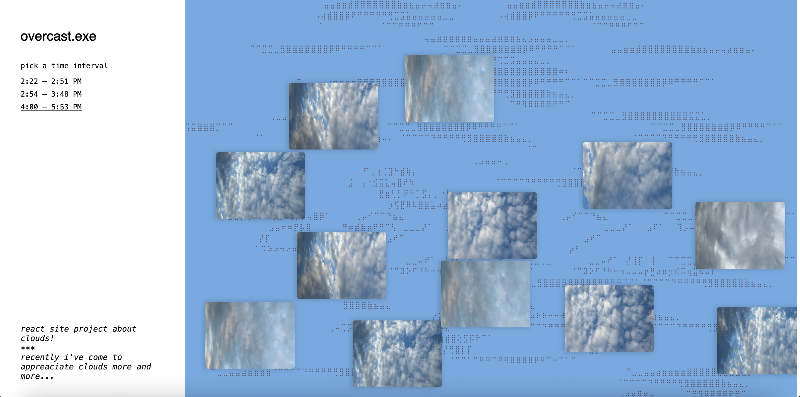

Web Development — Personal Archive & Photography
overcast.exe
A small React site for exploring collections of cloud photographs captured across different times of day in New York City — tracing the subtle moods and shifting atmospheres above the city.

New York City is famous for its skyline — but the sky itself is easy to overlook. This project started as a personal habit: looking up. Over time, those upward glances accumulated into a quiet archive of cloud photographs taken across the city at different hours of the day, across many days.
The site invites users to select from three time intervals — morning, afternoon, and evening — each revealing a curated series of cloud photos from that period. The sky above the city shifts in mood far more than we tend to notice. This project makes that shift legible, unhurried.
"The background color and ASCII art change with each time interval — creating a subtle rhythm and personality for each moment across the days."
Time as Structure
Rather than organizing photographs by date or location, the archive uses time of day as its primary axis. Morning, afternoon, and evening each carry a distinct quality of light and atmosphere — and the site's visual design responds to that. Background colors shift. ASCII art punctuates the transitions. The interface itself becomes a kind of clock.
This is a deliberately small project. There are no filters, no maps, no metadata overlays. Just clouds, time, and the city they drift over. Simplicity as a design choice rather than a limitation.
Building It
The site is built with React and Vite — a lightweight stack chosen to keep the focus on the photographs themselves. State management handles the time interval selection, dynamically swapping the image set, background palette, and ASCII art with each transition. The result is minimal in interface but alive in personality.


